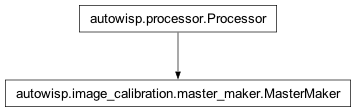

autowisp.image_calibration.master_maker module
Class Inheritance Diagram

Define classes for creating master calibration frames.
- class autowisp.image_calibration.master_maker.MasterMaker(*, outlier_threshold=5.0, average_func=<function nanmedian>, min_valid_frames=10, min_valid_values=5, max_iter=inf, exclude_mask=('BAD', ), compress=None, add_averaged_keywords=())[source]
Bases:
Processor
Implement the simplest & fully generalizable procedure for making a master.
- stacking_options
A dictionary with the default configuration of how to perform the stacking. The expected keys exactly match the keyword only arguments of the
stack()method.
Examples
>>> #Create an object for stacking frames to masters, overwriting the >>> #default outlier threshold and requiring at least 10 frames be >>> #stacked >>> make_master = MasterMaker(outlier_threshold=10.0, >>> min_valid_frames=10) >>> >>> #Stack a set of frames to a master, allowing no more than 3 >>> #averaging/outlier rejection iterations and allowing a minimum of 3 >>> #valid source pixels to make a master, for this master only. >>> make_master( >>> ['f1.fits.fz', 'f2.fits.fz', 'f3.fits.fz', 'f4.fits.fz'], >>> 'master.fits.fz', >>> max_iter=3, >>> min_valid_values=3 >>> )
- __call__(frame_list, output_fname, *, allow_overwrite=False, custom_header=None, compress=None, **stacking_options)[source]
Create a master by stacking the given frames.
The header of the craeted frame contains all keywords that are common and with consistent value from the input frames. In addition the following keywords are added:
- Parameters:
frame_list – A list of the frames to stack (FITS filenames).
output_fname – The name of the output file to create. Can involve substitutions of any header keywords of the generated file.
compress – See
__init__()allow_overwrite – See same name argument to autowisp.image_calibration.fits_util.create_result.
custom_header (dict) – A collection of keywords to use in addition to/instead of what is in the input frames header.
stacking_options – Keyword only arguments allowing overriding the stacking configuration specified at construction for this stack only.
- Returns:
Whether creating the master succeeded.
- [<FITS filenames>]:
Frames which were discarded during stacking.
- Return type:
- __init__(*, outlier_threshold=5.0, average_func=<function nanmedian>, min_valid_frames=10, min_valid_values=5, max_iter=inf, exclude_mask=('BAD', ), compress=None, add_averaged_keywords=())[source]
Create a master maker with the given default stacking configuration.
- Keyword Arguments:
compress – If None or False, the final result is not compressed. Otherwise, this is the quantization level used for compressing the image (see astropy.io.fits documentation).
oothers (all) – See the keyword only arguments to the
stack()method.
- Returns:
None
- default_exclude_mask = ('BAD',)
The default bit-mask indicating all flags which should result in a pixel being excluded from the averaging.
- prepare_for_stacking(image)[source]
Override with any useful pre-processing of images before stacking.
- Parameters:
image – One of the images to include in the stack.
- Returns:
The image to actually include in the stack. Return None if the image should be excluded.
- Return type:
same type as image
- stack(frame_list, *, min_valid_frames, outlier_threshold, average_func, min_valid_values, max_iter, exclude_mask, add_averaged_keywords, custom_header=None)[source]
Create a master by stacking a list of frames.
- Parameters:
frame_list – The frames to stack. Should be a list of FITS filenames.
min_valid_frames – The smallest number of frames from which to create a master. This could be broken if either the input list is not long enough or if too many frames are discarded by
prepare_for_stacking().outlier_threshold – See same name argument to
autowisp.iterative_rejection_util.iterative_rejection_average().average_func – See same name argument to
autowisp.iterative_rejection_util.iterative_rejection_average().min_valid_values – The minimum number of valid values to average for each pixel. If outlier rejection or masks results in fewer than this, the corresponding pixel gets a bad pixel mask.
max_iter – See same name argument to
autowisp.iterative_rejection_util.iterative_rejection_average().exclude_mask – A bitwise or of mask flags, any of which result in the corresponding pixels being excluded from the averaging. Other mask flags in the input frames are ignored, treated as clean.
add_averaged_keywords – Any keywords listed will be added to the master header with a value calculated using the same averaging procedure as the image pixels.
custom_header – See same name argument to __call__().
- Returns:
- 2-D array:
The best estimate for the values of the maseter at each pixel. None if stacking failed.
- 2-D array:
The best estimate of the standard deviation of the master pixels. None if stacking failed.
- 2-D array:
The pixel quality mask for the master. None if stacking failed.
- fits.Header:
The header to use for the newly created master frame. None if stacking failed.
- [<FITS filenames>]:
List of the frames that were excluded by self.prepare_for_stacking().
- Return type:
(tuple)